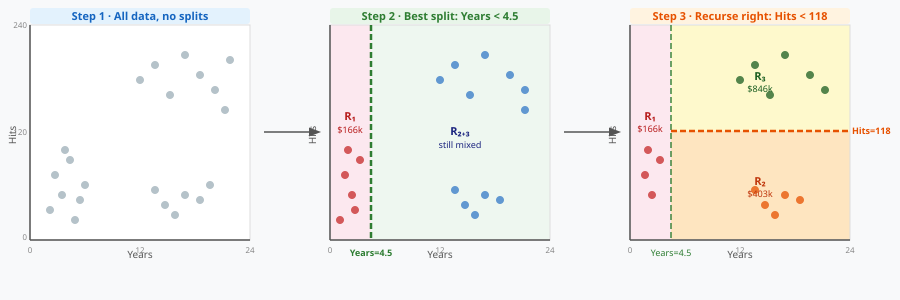
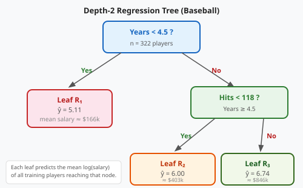

Where we are heading
0:00 · 0:25
Regression TreesRSS splits, leaf means, baseball salary.
0:25 · 0:50
Classification TreesGini, entropy, Heart + Carseats.
0:50 · 1:10
Pruningα penalty · K-fold CV.
1:10 · 1:20
Trees vs Linearwhen each wins.
1:20 · 1:30
Pros & Consvariance → bridge to ensembles.
A single tree is the most interpretable model you'll meet. Every prediction is a flowchart. The weakness — variance — sets up Course 8's payoff.
The algorithm
- Scan every feature j and every cutpoint s.
- Pick the (j, s) that minimises total within-region RSS.
- Recurse on the two children independently.
- Stop when a node has fewer than
min_samples_splitrows (default 2).
Prediction = mean of training responses in the leaf.
Split criterion: RSS
At each node, minimise:
RSSL(s) + RSSR(s)
RSSL = Σi: xj < s (yi − ȳL)² | RSSR = Σi: xj ≥ s (yi − ȳR)²
- Search is greedy — pick the best local split, no lookahead.
- Scan all features × all thresholds at every node: O(n p log n) per level.
- Result is a partition into rectangular regions in feature space.
Building the baseball tree — step by step

Each step picks the single split that maximises the RSS reduction across the entire remaining region.
Baseball salary example


Left: feature-space partition | Right: corresponding tree flowchart
Regression tree on synthetic salary data
Reading the tree output
- Each internal node: split variable, threshold, # samples, MSE.
- Each leaf: predicted value = mean of targets reaching that leaf.
- Trace a row from root to leaf → model reasoning in plain English.
Depth-2 tree → 3 regions. Each additional depth doubles the maximum number of regions.
Why not use error rate for splitting?
Node with 99 Yes / 1 No and node with 51 Yes / 49 No both have the same dominant class — but the second is much less pure.
Error rate = 1 − max(p̂k) is insensitive to this.
Gini and entropy measure the distribution, not just the winner. They reward splits that produce purer children.
Three impurity measures
| Measure | Formula (binary) | Max at p=0.5 |
|---|---|---|
| Classification error | 1 − max(p, 1−p) | 0.500 |
| Gini index | 2p(1−p) | 0.500 |
| Cross-entropy | −p log p − (1−p)log(1−p) | 0.693 |
- All three are 0 for pure nodes, maximum at 50/50.
- Gini and entropy are differentiable → better gradients for growing.
- Error rate is used for pruning (we care about the final misclassification rate, not impurity).
Gini vs entropy vs error rate — impurity comparison
Gini index
G = 1 − Σk p̂mk²
- Interpretation: probability that a randomly chosen element is mis-classified if labelled by the class distribution.
- Binary: G = 2p(1−p) — symmetric, peaks at p = 0.5.
- sklearn default for
DecisionTreeClassifier.
Cross-entropy (deviance)
D = −Σk p̂mk log p̂mk
- Information-theoretic measure: bits needed to encode the label distribution.
- Also called deviance in the tree literature.
- Numerically very similar to Gini — in practice they select almost identical splits.
- Use
criterion='entropy'orcriterion='log_loss'in sklearn.
Classification tree on heart disease data
Heart disease example
- 303 patients · 13 predictors (age, sex, chest pain type, …)
- Target:
AHD— diagnosed heart disease (Yes/No)
Full unpruned tree achieves ~100% train accuracy but often poor test performance → needs pruning (Part 3).
Test error vs depth curve shows the classic U-shape: too shallow underfits, too deep overfits.
Carseats — predict High sales
- 400 stores · 10 predictors (ShelveLoc, Price, CompPrice, …)
- Target:
High = (Sales > 8)
Root split: ShelveLoc_Good — shelf location dominates all else.
Depth-3 tree is already competitive (~77% accuracy) and fully interpretable.
The problem: full trees overfit
- A fully grown tree has one leaf per (nearly) unique training observation.
- Train error → 0, but test error is terrible.
- Naïve fix: set
max_depthby hand — but how do you choose?
Better: grow full, then prune by penalising tree complexity.
Penalised cost criterion
Cα(T) = Σleaves MSE(leaf) + α · |T|
- α = 0: no penalty → full tree T₀.
- α → ∞: every split is too costly → root-only stump.
- Weakest-link pruning finds the nested sequence T₀ ⊃ T₁ ⊃ … each minimising Cα for a range of α.
sklearn: cost_complexity_pruning_path() returns all candidate α values.
Cost-complexity pruning — choose α with cross-validation
Selecting α with cross-validation

- Compute the pruning path: all candidate α values.
- For each α, evaluate K-fold CV error.
- Pick the α that minimises CV error (or 1-SE rule for parsimony).
- Refit the full training set with the selected α.
Effect of α on tree structure
α = 0
Full tree · 100% train acc · overfits
α = CV-optimal
Pruned tree · balances bias/variance
α → ∞
Root stump · predicts majority class everywhere
The pruned tree is usually much more interpretable than the full tree — and generalises better.
Two scenarios (ISLR Figure 8.7)

Trees vs linear models — boundary type matters
When each wins
| Scenario | Linear model | Decision tree |
|---|---|---|
| Truly linear boundary | ✅ exact fit, low variance | ❌ many splits to approximate a line |
| Non-linear, axis-aligned | ❌ can't capture the pattern | ✅ few splits → exact partition |
| Interactions | ❌ need to specify them manually | ✅ nested splits automatically capture interactions |
| Interpretability | β-coefficients | flowchart — often more natural |
In practice: if the data is "close to linear," use linear models. Otherwise, try trees — or better yet, ensembles.
Strengths of trees
- Interpretable: every prediction is a set of if–then rules.
- No feature scaling: splits depend only on ordering.
- Mixed types: numeric and categorical in one model.
- Interactions: nested splits capture X₁·X₂ interactions automatically.
- Missing values: surrogate splits handle them gracefully.
Feature importance from a decision tree
The variance problem
Fit the same depth-3 tree on four different bootstrap samples of the same training data:
- Root split changes from
ShelveLoc_GoodtoPriceto … - Tree structure changes completely.
- Each individual tree is unbiased but has huge variance.
High variance is the single biggest weakness. Ensembles fix it.
The bridge to Course 8
Bagging
Average B independent trees on bootstrap samples → lower variance
Random Forests
Bagging + random feature subsets → decorrelated trees → even lower variance
Boosting
Sequential trees each fitting the residuals → reduce bias
Single tree: interpretable but variable. Ensemble: accurate but a black box. Course 8 teaches you to navigate that trade-off.
Recap
- Trees split recursively to minimise RSS (regression) or Gini/entropy (classification).
- Always grow full, then prune with
ccp_alphachosen by K-fold CV. - Use Gini/entropy for growing; classification error is fine for pruning.
- Trees beat linear models on non-linear, axis-aligned boundaries; lose on smooth linear ones.
- Variance is the Achilles' heel → ensembles to the rescue in Course 8.